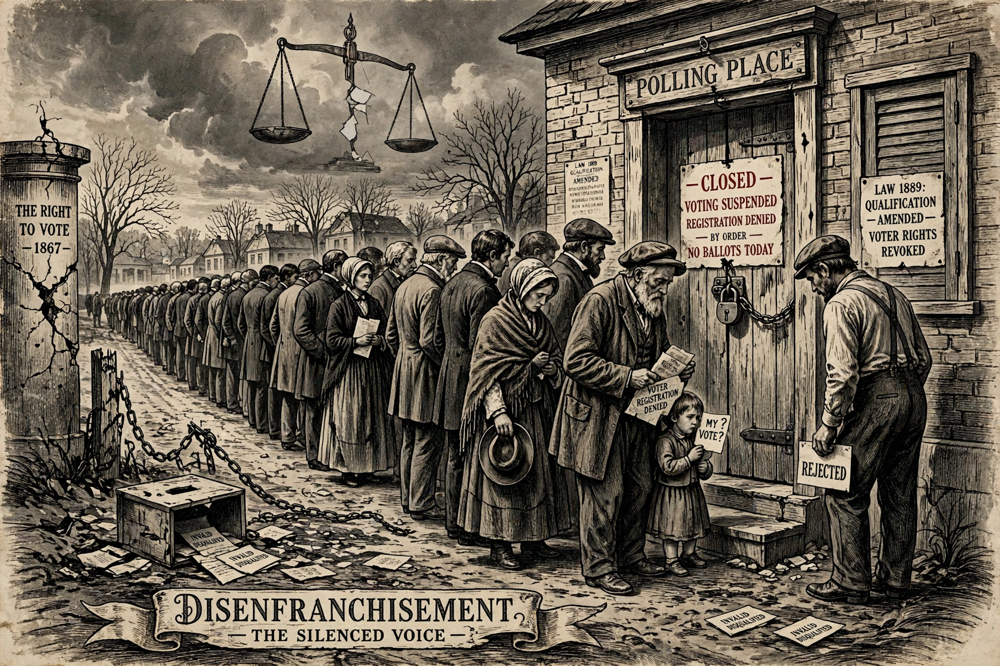

| Disenfranchisement | |
|---|---|
 | |
| Definition | Removal or restriction of the right to vote |
| Common grounds | Felony conviction, race, sex, property, literacy, residence, citizenship |
| Related concepts | Suffrage, voter suppression, felon disenfranchisement |
Disenfranchisement (also spelled disfranchisement) is the removal, revocation or restriction of suffrage — the right to vote in elections — from a person or group. It may be imposed by law (for example on convicted felons or non-citizens), produced by administrative or practical barriers (such as purges of electoral rolls, onerous identification requirements or inaccessible polling places), or maintained through intimidation and violence. The history of democracy is in large part a history of struggles against disenfranchisement: of the poor, of women, of racial and religious minorities.
Felon disenfranchisement is widespread in the United States, where most states restrict voting by people convicted of felonies — during imprisonment, on parole or probation, and in some states for life unless rights are restored. Several million Americans are affected; the practice's roots lie partly in post-Reconstruction efforts to suppress Black voting, alongside poll taxes, literacy tests and white primaries (see voting rights in the United States and the grandfather clause). Most other democracies allow prisoners to vote or restrict the franchise only for serious electoral offences; the European Court of Human Rights has held blanket bans on prisoner voting to violate the European Convention.
Historical disenfranchisement has at various times targeted: women (enfranchised nationally in the US only in 1920, in France in 1944, in Switzerland in 1971); propertyless men (universal male suffrage was a 19th-century achievement in most Western states); religious minorities (British Catholics and Jews were barred from Parliament into the 19th century); indigenous peoples (Native Americans gained US citizenship only in 1924, Australian Aboriginal people full federal voting rights in 1962); and racial groups under colonialism and apartheid, where South Africa's Black majority was entirely disenfranchised until 1994. Mental capacity, age, residency and citizenship remain near-universal qualifications, and expatriates' voting rights vary widely.
Scholars argue that disenfranchisement distorts representation — prisoners are counted for apportionment in the districts where they are incarcerated ("prison gerrymandering") in the United States — and weakens the reintegration of offenders. Defenders of felon disenfranchisement argue that serious crime forfeits civic trust. The trend in recent decades has been toward restoration of rights, with several US states and European countries easing restrictions, while debates continue over voter-identification laws, roll maintenance and other practices critics classify as modern disenfranchisement.
See also: Voting rights in the United States · Grandfather clause · United States Secretary of State